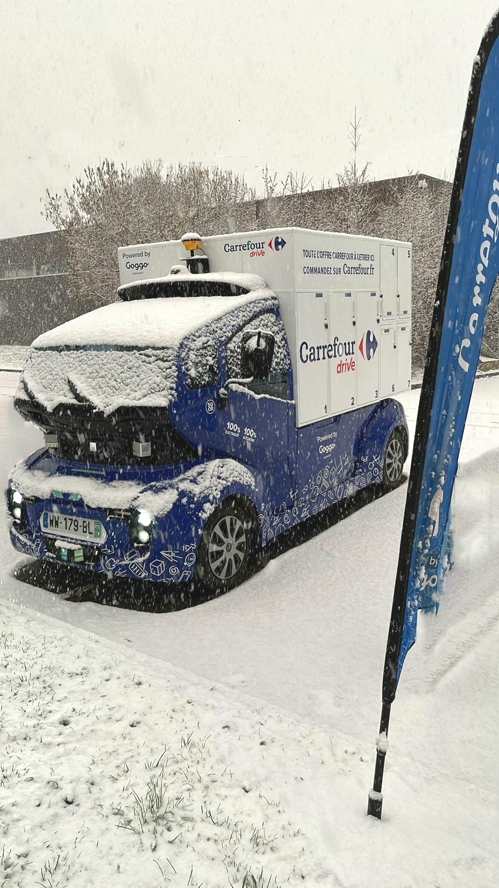
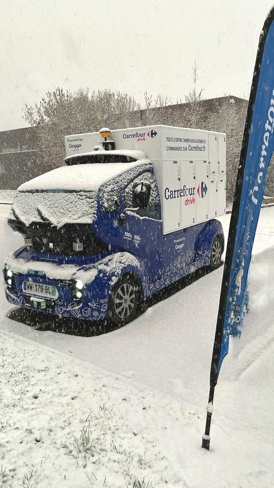
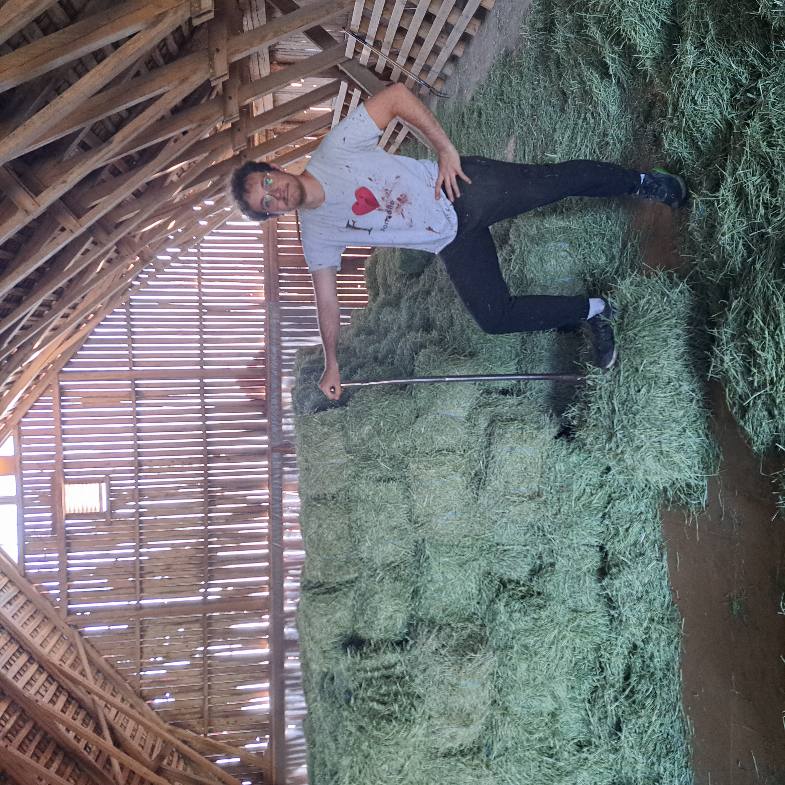
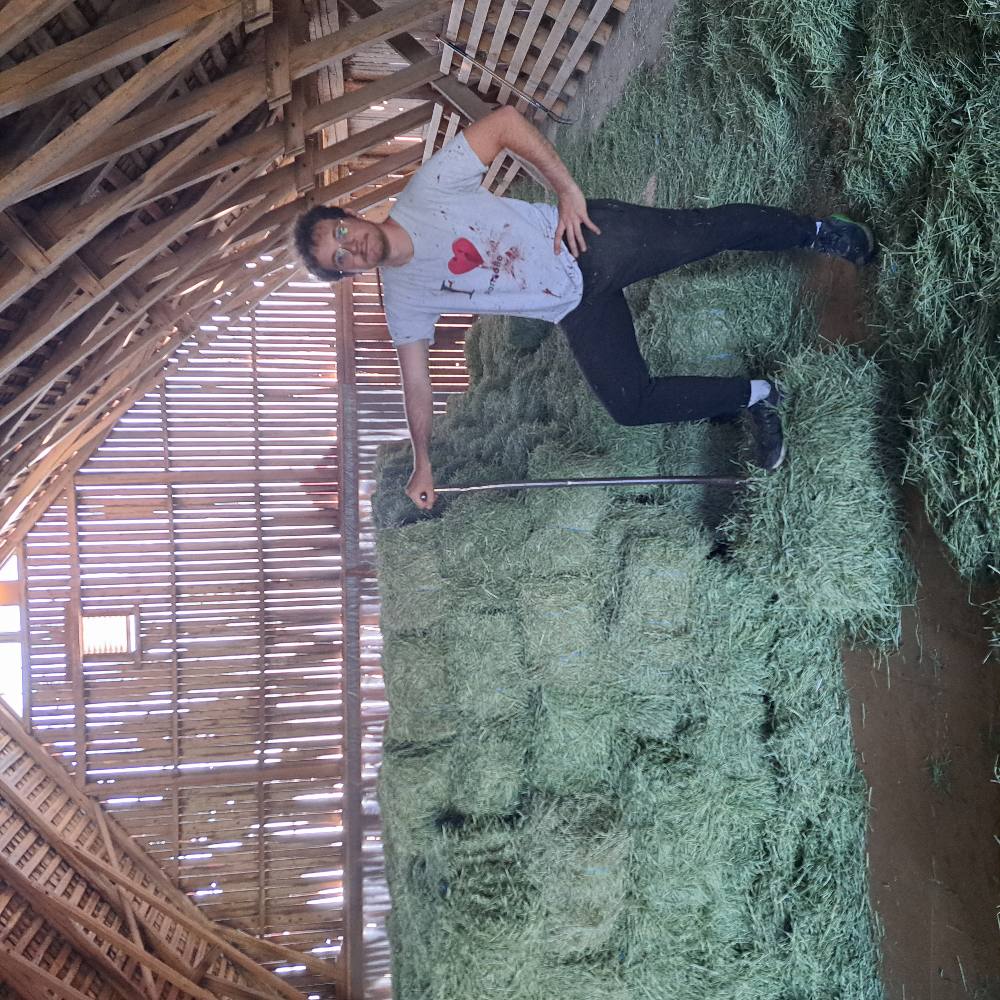

Welcome to the experiences page. Find out about my past internships, jobs and volunteering experiences.


[Internship] R&D Data Scientist at Mentech Innovation
May 2024 - September 2024 | Eindhoven, The Netherlands
Mentech Innovation is a company whose aim is to improve the quality of life of vulnerable people, particularly those suffering from dementia and mental disabilities. To achieve this, it uses its Hume platform, which enables the early detection of stress attacks through the use of body sensors coupled with predictive algorithms based on physiological data.
Project: The project served as a Proof-Of-Concept in the establishment of AI models enabling the transition from detection to automated intervention in the management of patient stress. The aim of the model was to find the best intervention policy (frequency and timing) according to the patient's profile and state of stress.
Tasks:
- Carrying out an exploratory analysis of the data sources available within the company.
- Construction of a dedicated dataset from data extracted from clinical tests.
- Design, training and evaluation of a prototype model combining unsupervised learning, reinforcement learning and recurrent neural networks (LSTM, Transformers).
Technologies & Skills: Python, PyTorch, Numpy, Pandas, Hugging Face Transformers, CUDA, Unsupervised learning, Reinforcement learning, AutoEncoders, Transformers, LSTM, Review of the scientific literature, LaTeX.
Useful links :
 


[Internship + Short-term] Project management in logistics with autonomous vehicles at Goggo Network
September 2022 - April 2023 | Paris, France
Goggo Network is a Spanish start-up dedicated to the creation and operation of autonomous mobility networks. After assisting government bodies in establishing a regulatory framework for the use of autonomous vehicles in Europe, Goggo Network has launched several delivery services from 2022 onwards, operating autonomous vehicles ranging from 'sidewalk robots' travelling at up to 5km/h in pedestrian traffic to logistics vehicles travelling at up to 50km/h on open roads and in mixed traffic.
Project: I held this position during my gap year. Although I had the opportunity to take part in several projects during that time, the bulk of my contribution was to the ‘Carrefour Drive Mobile’ project. This involved delivering groceries on the road with a 100% autonomous vehicle equipped with connected lockers stopping at points of interest. This was a European first, with extensive media coverage (13h France 2, 13h TF1, Le Figaro, etc.) and a presentation by Mr Christophe Béchu (Minister for Ecological Transition and Territorial Cohesion) and Mr Alexandre Bompard (Carrefour CEO).
Tasks:
- Designing pilot projects, securing deployment and service launches with partners and customers.
- Performance analysis and continuous improvement of services and processes.
- Product owning of the service's user, operator and customer interfaces.
- Communicating project progress with partners, potential partners/clients and team members.
Technologies & Skills: Communication, rigour, autonomy, creativity, data analysis, problem solving, Agile methods, planning and project management.
Useful links :

 


[Volunteering] WWOOFing in a ranch in Sweden
May 2023 - August 2023 | Ekjsö, Sweden
WWOOFing (World Wide Opportunities on Organic Farms) is a form of volunteering where individuals work as volunteers on farms in exchange for accommodation, food and an educational experience about sustainable agriculture. In my case, I worked on a ranch with horses and ducks, selling local produce and also serving as a guest house. I mainly looked after the animals, renovated the barn, tended the garden and fields and welcomed guests.